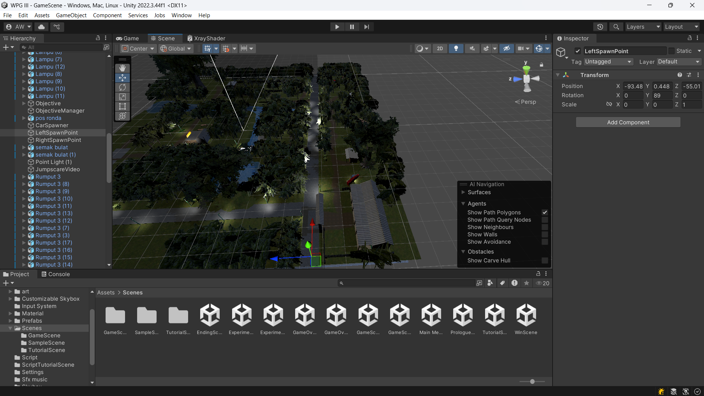
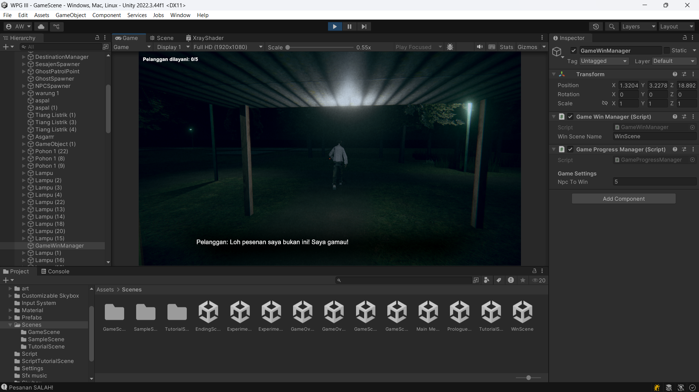
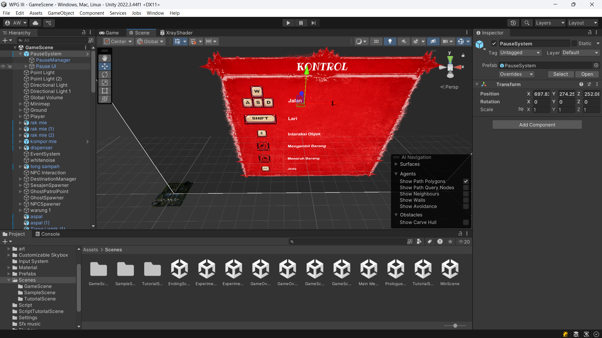

Peran
Kontribusi pemrograman gameplay dan pengembangan elemen pendukung permainan.
Prototipe game horor 3D berlatar warung makan, menggabungkan aktivitas sehari-hari, interaksi lingkungan, dan suasana horor.

Warung Indomie merupakan prototipe game horor 3D yang mengambil latar sebuah warung makan. Konsepnya memadukan aktivitas seperti berinteraksi dengan objek dan menjalankan tugas dengan suasana lingkungan yang perlahan membangun ketegangan.
Proyek ini mengeksplorasi cara menghubungkan aktivitas gameplay, penyajian cerita, dan elemen lingkungan menjadi pengalaman bermain yang saling mendukung. Proyek masih dalam tahap pengembangan prototipe.
Kontribusi pemrograman gameplay dan pengembangan elemen pendukung permainan.
Unity dan C#.
Menghubungkan sistem gameplay dan antarmuka agar pengalaman bermain, penyajian cerita, serta interaksi lingkungan dapat berjalan sebagai satu kesatuan.

Tampilan Lingkungan
Tampilan Gameplay Warung Bu inah
Tampilan UIMelalui proyek ini, saya mendapatkan pengalaman dalam mengembangkan elemen gameplay sekaligus memperhatikan bagaimana UI, dialog, kamera, dan lingkungan mendukung pengalaman bermain. Proyek ini juga menjadi latihan mengintegrasikan beberapa sistem dalam satu prototipe game 3D.